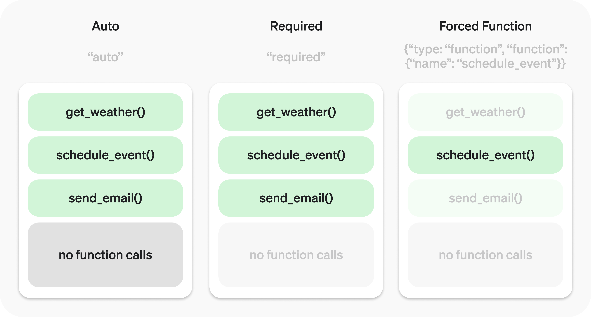

Function calling#
Enable models to fetch data and take actions.
Function calling provides a powerful and flexible way for OpenAI models to interface with your code or external services. This guide will explain how to connect the models to your own custom code to fetch data or take action.
Get weather
Function calling example with get_weather function
from openai import OpenAI
client = OpenAI()
tools = [{
"type": "function",
"name": "get_weather",
"description": "Get current temperature for a given location.",
"parameters": {
"type": "object",
"properties": {
"location": {
"type": "string",
"description": "City and country e.g. Bogotá, Colombia"
}
},
"required": [
"location"
],
"additionalProperties": False
}
}]
response = client.responses.create(
model="gpt-4.1",
input=[{"role": "user", "content": "What is the weather like in Paris today?"}],
tools=tools
)
print(response.output)
Output
[{
"type": "function_call",
"id": "fc_12345xyz",
"call_id": "call_12345xyz",
"name": "get_weather",
"arguments": "{\"location\":\"Paris, France\"}"
}]
Send email
Function calling example with send_email function
from openai import OpenAI
client = OpenAI()
tools = [{
"type": "function",
"name": "send_email",
"description": "Send an email to a given recipient with a subject and message.",
"parameters": {
"type": "object",
"properties": {
"to": {
"type": "string",
"description": "The recipient email address."
},
"subject": {
"type": "string",
"description": "Email subject line."
},
"body": {
"type": "string",
"description": "Body of the email message."
}
},
"required": [
"to",
"subject",
"body"
],
"additionalProperties": False
}
}]
response = client.responses.create(
model="gpt-4.1",
input=[{"role": "user", "content": "Can you send an email to ilan@example.com and katia@example.com saying hi?"}],
tools=tools
)
print(response.output)
Output
[
{
"type": "function_call",
"id": "fc_12345xyz",
"call_id": "call_9876abc",
"name": "send_email",
"arguments": "{\"to\":\"ilan@example.com\",\"subject\":\"Hello!\",\"body\":\"Just wanted to say hi\"}"
},
{
"type": "function_call",
"id": "fc_12345xyz",
"call_id": "call_9876abc",
"name": "send_email",
"arguments": "{\"to\":\"katia@example.com\",\"subject\":\"Hello!\",\"body\":\"Just wanted to say hi\"}"
}
]
Search knowledge base
Function calling example with search_knowledge_base function
from openai import OpenAI
client = OpenAI()
tools = [{
"type": "function",
"name": "search_knowledge_base",
"description": "Query a knowledge base to retrieve relevant info on a topic.",
"parameters": {
"type": "object",
"properties": {
"query": {
"type": "string",
"description": "The user question or search query."
},
"options": {
"type": "object",
"properties": {
"num_results": {
"type": "number",
"description": "Number of top results to return."
},
"domain_filter": {
"type": [
"string",
"null"
],
"description": "Optional domain to narrow the search (e.g. 'finance', 'medical'). Pass null if not needed."
},
"sort_by": {
"type": [
"string",
"null"
],
"enum": [
"relevance",
"date",
"popularity",
"alphabetical"
],
"description": "How to sort results. Pass null if not needed."
}
},
"required": [
"num_results",
"domain_filter",
"sort_by"
],
"additionalProperties": False
}
},
"required": [
"query",
"options"
],
"additionalProperties": False
}
}]
response = client.responses.create(
model="gpt-4.1",
input=[{"role": "user", "content": "Can you find information about ChatGPT in the AI knowledge base?"}],
tools=tools
)
print(response.output)
Output
[{
"type": "function_call",
"id": "fc_12345xyz",
"call_id": "call_4567xyz",
"name": "search_knowledge_base",
"arguments": "{\"query\":\"What is ChatGPT?\",\"options\":{\"num_results\":3,\"domain_filter\":null,\"sort_by\":\"relevance\"}}"
}]
Overview#
You can give the model access to your own custom code through function calling. Based on the system prompt and messages, the model may decide to call these functions — instead of (or in addition to) generating text or audio.
You’ll then execute the function code, send back the results, and the model will incorporate them into its final response.

Function calling has two primary use cases:
Use Case |
Description |
|---|---|
Fetching Data |
Retrieve up-to-date information to incorporate into the model’s response (RAG). Useful for searching knowledge bases and retrieving specific data from APIs (e.g. current weather data). |
Taking Action |
Perform actions like submitting a form, calling APIs, modifying application state (UI/frontend or backend), or taking agentic workflow actions (like handing off the conversation). |
Sample function#
Let’s look at the steps to allow a model to use a real get_weather function defined below:
Sample get_weather function implemented in your codebase
import requests
def get_weather(latitude, longitude):
response = requests.get(f"https://api.open-meteo.com/v1/forecast?latitude={latitude}&longitude={longitude}¤t=temperature_2m,wind_speed_10m&hourly=temperature_2m,relative_humidity_2m,wind_speed_10m")
data = response.json()
return data['current']['temperature_2m']
async function getWeather(latitude, longitude) {
const response = await fetch(`https://api.open-meteo.com/v1/forecast?latitude=${latitude}&longitude=${longitude}¤t=temperature_2m,wind_speed_10m&hourly=temperature_2m,relative_humidity_2m,wind_speed_10m`);
const data = await response.json();
return data.current.temperature_2m;
}
Unlike the diagram earlier, this function expects precise latitude and longitude instead of a general location parameter. (However, our models can automatically determine the coordinates for many locations!)
Function calling steps#
Call model with functions defined – along with your system and user messages.
Step 1: Call model with get_weather tool defined
from openai import OpenAI
import json
client = OpenAI()
tools = [{
"type": "function",
"name": "get_weather",
"description": "Get current temperature for provided coordinates in celsius.",
"parameters": {
"type": "object",
"properties": {
"latitude": {"type": "number"},
"longitude": {"type": "number"}
},
"required": ["latitude", "longitude"],
"additionalProperties": False
},
"strict": True
}]
input_messages = [{"role": "user", "content": "What's the weather like in Paris today?"}]
response = client.responses.create(
model="gpt-4.1",
input=input_messages,
tools=tools,
)
Model decides to call function(s) – model returns the name and input arguments.
response.output
[{
"type": "function_call",
"id": "fc_12345xyz",
"call_id": "call_12345xyz",
"name": "get_weather",
"arguments": "{\"latitude\":48.8566,\"longitude\":2.3522}"
}]
Execute function code – parse the model’s response and handle function calls.
Step 3: Execute get_weather function
tool_call = response.output[0]
args = json.loads(tool_call.arguments)
result = get_weather(args["latitude"], args["longitude"])
Supply model with results – so it can incorporate them into its final response.
Step 4: Supply result and call model again
input_messages.append(tool_call) # append model's function call message
input_messages.append({ # append result message
"type": "function_call_output",
"call_id": tool_call.call_id,
"output": str(result)
})
response_2 = client.responses.create(
model="gpt-4.1",
input=input_messages,
tools=tools,
)
print(response_2.output_text)
Model responds – incorporating the result in its output.
response_2.output_text
"The current temperature in Paris is 14°C (57.2°F)."
Defining functions#
Functions can be set in the tools parameter of each API request.
A function is defined by its schema, which informs the model what it does and what input arguments it expects. It comprises the following fields:
Field |
Description |
|---|---|
type |
This should always be function |
name |
The function’s name (e.g. get_weather) |
description |
Details on when and how to use the function |
parameters |
JSON schema defining the function’s input arguments |
strict |
Whether to enforce strict mode for the function call |
Take a look at this example.
{
"type": "function",
"name": "get_weather",
"description": "Retrieves current weather for the given location.",
"parameters": {
"type": "object",
"properties": {
"location": {
"type": "string",
"description": "City and country e.g. Bogotá, Colombia"
},
"units": {
"type": "string",
"enum": [
"celsius",
"fahrenheit"
],
"description": "Units the temperature will be returned in."
}
},
"required": [
"location",
"units"
],
"additionalProperties": false
},
"strict": true
}
Because the parameters are defined by a JSON schema, you can leverage many of its rich features like property types, enums, descriptions, nested objects, and, recursive objects.
Best practices for defining functions#
Write clear and detailed function names, parameter descriptions, and instructions.
Explicitly describe the purpose of the function and each parameter (and its format), and what the output represents.
Use the system prompt to describe when (and when not) to use each function. Generally, tell the model exactly what to do.
Include examples and edge cases, especially to rectify any recurring failures. (Note: Adding examples may hurt performance for
reasoning models)
Apply software engineering best practices.
Make the functions obvious and intuitive. (principle of least surprise)
Use enums and object structure to make invalid states unrepresentable. (e.g.
toggle_light(on: bool, off: bool)allows for invalid calls)Pass the intern test. Can an intern/human correctly use the function given nothing but what you gave the model? (If not, what questions do they ask you? Add the answers to the prompt.)
Offload the burden from the model and use code where possible.
Don’t make the model fill arguments you already know. For example, if you already have an
order_idbased on a previous menu, don’t have anorder_idparam – instead, have no paramssubmit_refund()and pass theorder_idwith code.Combine functions that are always called in sequence. For example, if you always call
mark_location()afterquery_location(), just move the marking logic into the query function call.
Keep the number of functions small for higher accuracy.
Evaluate your performance with different numbers of functions.
Aim for fewer than 20 functions at any one time, though this is just a soft suggestion.
Leverage OpenAI resources.
Generate and iterate on function schemas in the Playground.
Consider fine-tuning to increase function calling accuracy for large numbers of functions or difficult tasks. (cookbook)
Token Usage#
Under the hood, functions are injected into the system message in a syntax the model has been trained on. This means functions count against the model’s context limit and are billed as input tokens. If you run into token limits, we suggest limiting the number of functions or the length of the descriptions you provide for function parameters.
It is also possible to use fine tuning to reduce the number of tokens used if you have many functions defined in your tools specification.
Handling function calls#
When the model calls a function, you must execute it and return the result. Since model responses can include zero, one, or multiple calls, it is best practice to assume there are several.
The response output array contains an entry with the type having a value of function_call. Each entry with a call_id (used later to submit the function result), name, and JSON-encoded arguments.
Sample response with multiple function calls
[
{
"id": "fc_12345xyz",
"call_id": "call_12345xyz",
"type": "function_call",
"name": "get_weather",
"arguments": "{\"location\":\"Paris, France\"}"
},
{
"id": "fc_67890abc",
"call_id": "call_67890abc",
"type": "function_call",
"name": "get_weather",
"arguments": "{\"location\":\"Bogotá, Colombia\"}"
},
{
"id": "fc_99999def",
"call_id": "call_99999def",
"type": "function_call",
"name": "send_email",
"arguments": "{\"to\":\"bob@email.com\",\"body\":\"Hi bob\"}"
}
]
Execute function calls and append results
for tool_call in response.output:
if tool_call.type != "function_call":
continue
name = tool_call.name
args = json.loads(tool_call.arguments)
result = call_function(name, args)
input_messages.append({
"type": "function_call_output",
"call_id": tool_call.call_id,
"output": str(result)
})
In the example above, we have a hypothetical call_function to route each call. Here’s a possible implementation:
Execute function calls and append results
def call_function(name, args):
if name == "get_weather":
return get_weather(**args)
if name == "send_email":
return send_email(**args)
Formatting results#
A result must be a string, but the format is up to you (JSON, error codes, plain text, etc.). The model will interpret that string as needed.
If your function has no return value (e.g. send_email), simply return a string to indicate success or failure. (e.g. "success")
Incorporating results into response#
After appending the results to your input, you can send them back to the model to get a final response.
Send results back to model
response = client.responses.create(
model="gpt-4.1",
input=input_messages,
tools=tools,
)
Final response
"It's about 15°C in Paris, 18°C in Bogotá, and I've sent that email to Bob."
Additional configurations#
Tool choice#
By default the model will determine when and how many tools to use. You can force specific behavior with the tool_choice parameter.
Auto: (Default) Call zero, one, or multiple functions.
tool_choice: "auto"Required: Call one or more functions.
tool_choice: "required"Forced Function: Call exactly one specific function.
tool_choice: {"type": "function", "name": "get_weather"}

You can also set tool_choice to "none" to imitate the behavior of passing no functions.
Parallel function calling#
The model may choose to call multiple functions in a single turn. You can prevent this by setting parallel_tool_calls to false, which ensures exactly zero or one tool is called.
Note: Currently, if you are using a fine tuned model and the model calls multiple functions in one turn then strict mode will be disabled for those calls.
Note for gpt-4.1-nano-2025-04-14: This snapshot of gpt-4.1-nano can sometimes include multiple tools calls for the same tool if parallel tool calls are enabled. It is recommended to disable this feature when using this nano snapshot.
Strict mode#
Setting strict to true will ensure function calls reliably adhere to the function schema, instead of being best effort. We recommend always enabling strict mode.
Under the hood, strict mode works by leveraging our structured outputs feature and therefore introduces a couple requirements:
additionalPropertiesmust be set tofalsefor each object in theparameters.All fields in
propertiesmust be marked asrequired.
You can denote optional fields by adding null as a type option (see example below).
Strict mode enabled
{
"type": "function",
"name": "get_weather",
"description": "Retrieves current weather for the given location.",
"strict": true,
"parameters": {
"type": "object",
"properties": {
"location": {
"type": "string",
"description": "City and country e.g. Bogotá, Colombia"
},
"units": {
"type": ["string", "null"],
"enum": ["celsius", "fahrenheit"],
"description": "Units the temperature will be returned in."
}
},
"required": ["location", "units"],
"additionalProperties": false
}
}
Strict mode disabled
{
"type": "function",
"name": "get_weather",
"description": "Retrieves current weather for the given location.",
"parameters": {
"type": "object",
"properties": {
"location": {
"type": "string",
"description": "City and country e.g. Bogotá, Colombia"
},
"units": {
"type": "string",
"enum": ["celsius", "fahrenheit"],
"description": "Units the temperature will be returned in."
}
},
"required": ["location"],
}
}
While we recommend you enable strict mode, it has a few limitations:
Some features of JSON schema are not supported. (See
supported schemas)
Streaming#
Streaming can be used to surface progress by showing which function is called as the model fills its arguments, and even displaying the arguments in real time.
Streaming function calls is very similar to streaming regular responses: you set stream to true and get different event objects.
Streaming function calls
from openai import OpenAI
client = OpenAI()
tools = [{
"type": "function",
"name": "get_weather",
"description": "Get current temperature for a given location.",
"parameters": {
"type": "object",
"properties": {
"location": {
"type": "string",
"description": "City and country e.g. Bogotá, Colombia"
}
},
"required": [
"location"
],
"additionalProperties": False
}
}]
stream = client.responses.create(
model="gpt-4.1",
input=[{"role": "user", "content": "What's the weather like in Paris today?"}],
tools=tools,
stream=True
)
for event in stream:
print(event)
Output events
{"type":"response.output_item.added","response_id":"resp_1234xyz","output_index":0,"item":{"type":"function_call","id":"fc_1234xyz","call_id":"call_1234xyz","name":"get_weather","arguments":""}}
{"type":"response.function_call_arguments.delta","response_id":"resp_1234xyz","item_id":"fc_1234xyz","output_index":0,"delta":"{\""}
{"type":"response.function_call_arguments.delta","response_id":"resp_1234xyz","item_id":"fc_1234xyz","output_index":0,"delta":"location"}
{"type":"response.function_call_arguments.delta","response_id":"resp_1234xyz","item_id":"fc_1234xyz","output_index":0,"delta":"\":\""}
{"type":"response.function_call_arguments.delta","response_id":"resp_1234xyz","item_id":"fc_1234xyz","output_index":0,"delta":"Paris"}
{"type":"response.function_call_arguments.delta","response_id":"resp_1234xyz","item_id":"fc_1234xyz","output_index":0,"delta":","}
{"type":"response.function_call_arguments.delta","response_id":"resp_1234xyz","item_id":"fc_1234xyz","output_index":0,"delta":" France"}
{"type":"response.function_call_arguments.delta","response_id":"resp_1234xyz","item_id":"fc_1234xyz","output_index":0,"delta":"\"}"}
{"type":"response.function_call_arguments.done","response_id":"resp_1234xyz","item_id":"fc_1234xyz","output_index":0,"arguments":"{\"location\":\"Paris, France\"}"}
{"type":"response.output_item.done","response_id":"resp_1234xyz","output_index":0,"item":{"type":"function_call","id":"fc_1234xyz","call_id":"call_2345abc","name":"get_weather","arguments":"{\"location\":\"Paris, France\"}"}}
Instead of aggregating chunks into a single content string, however, you’re aggregating chunks into an encoded arguments JSON object.
When the model calls one or more functions an event of type response.output_item.added will be emitted for each function call that contains the following fields:
Field |
Description |
|---|---|
response_id |
The id of the response that the function call belongs to |
output_index |
The index of the output item in the response. This respresents the individual function calls in the response. |
item |
The in-progress function call item that includes a name, arguments and id field |
Afterwards you will receive a series of events of type response.function_call_arguments.delta which will contain the delta of the arguments field. These events contain the following fields:
Field |
Description |
|---|---|
response_id |
The id of the response that the function call belongs to |
item_id |
The id of the function call item that the delta belongs to |
output_index |
The index of the output item in the response. This respresents the individual function calls in the response. |
delta |
The delta of the arguments field. |
Below is a code snippet demonstrating how to aggregate the deltas into a final tool_call object.
Accumulating tool_call deltas
final_tool_calls = {}
for event in stream:
if event.type === 'response.output_item.added':
final_tool_calls[event.output_index] = event.item;
elif event.type === 'response.function_call_arguments.delta':
index = event.output_index
if final_tool_calls[index]:
final_tool_calls[index].arguments += event.delta
Accumulated final_tool_calls[0]
{
"type": "function_call",
"id": "fc_1234xyz",
"call_id": "call_2345abc",
"name": "get_weather",
"arguments": "{\"location\":\"Paris, France\"}"
}
When the model has finished calling the functions an event of type response.function_call_arguments.done will be emitted. This event contains the entire function call including the following fields:
Field |
Description |
|---|---|
response_id |
The id of the response that the function call belongs to |
output_index |
The index of the output item in the response. This respresents the individual function calls in the response. |
item |
The function call item that includes a name, arguments and id field. |